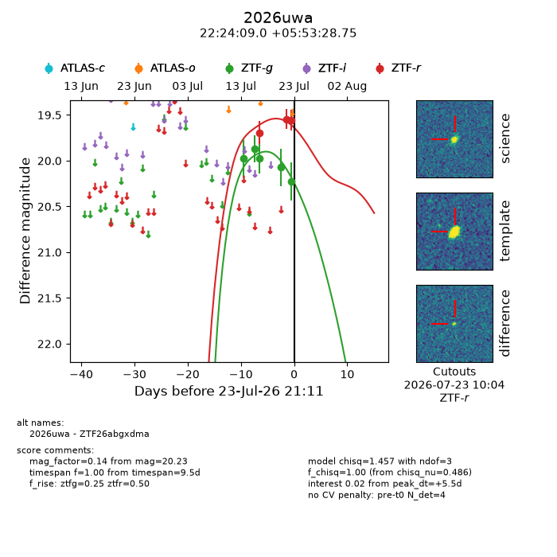
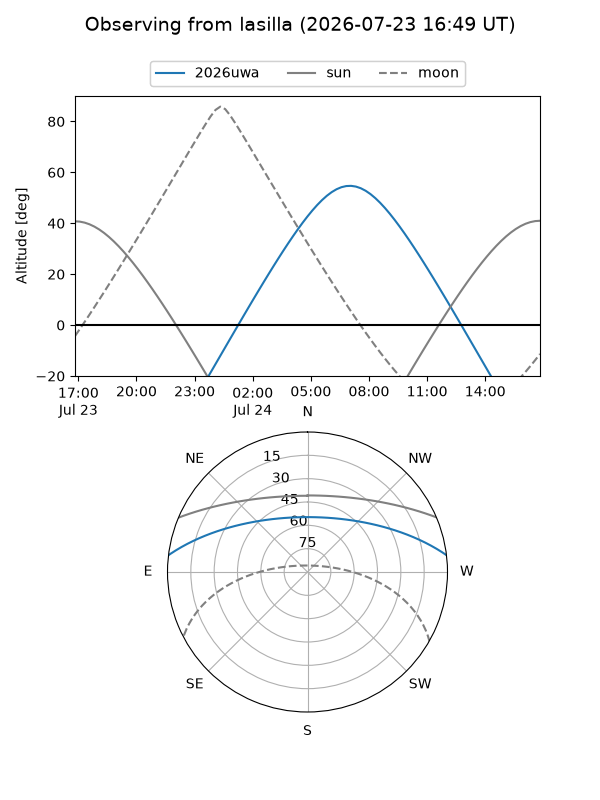
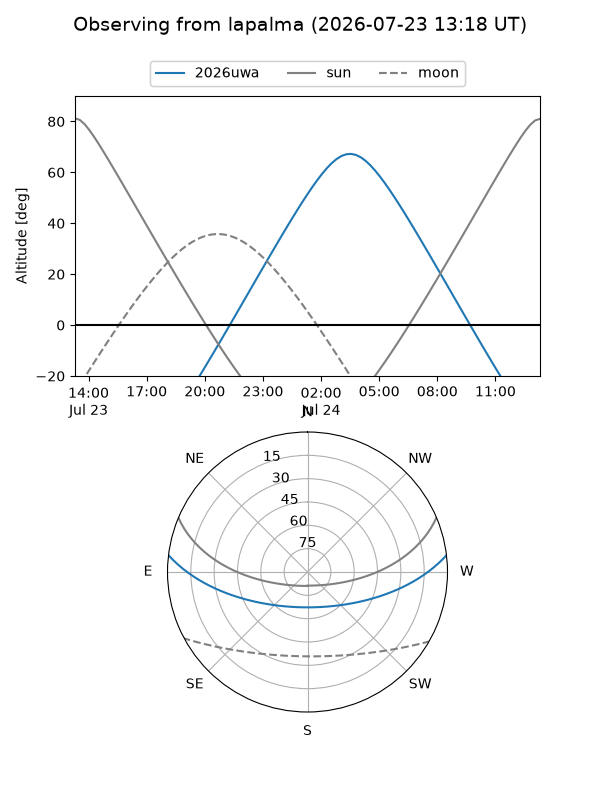
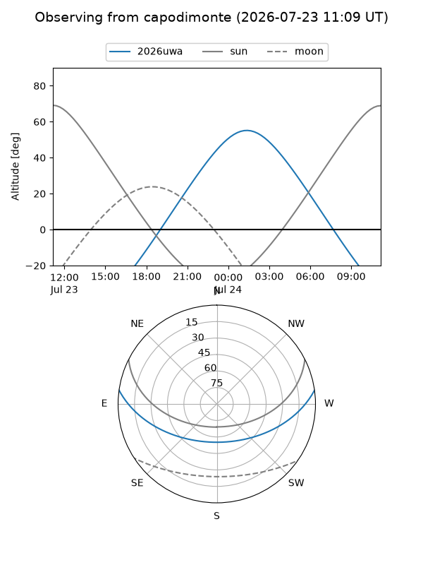
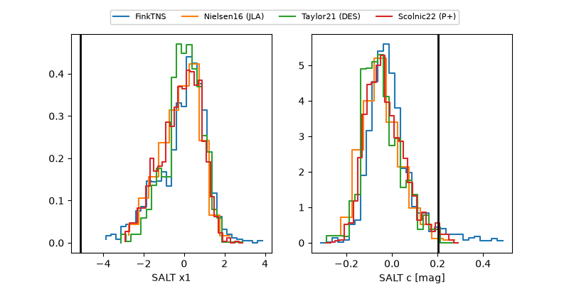

2026uwa
Target 2026uwa at 2026-07-23 21:14
Aliases and brokers:
FINK-ZTF: ztf.fink-portal.org/ZTF26abgxdma
Lasair-ZTF: lasair-ztf.lsst.ac.uk/objects/ZTF26abgxdma
ALeRCE-ZTF: alerce.online/object/ZTF26abgxdma
YSE-PZ: ziggy.ucolick.org/yse/transient_detail/2026uwa
TNS name: wis-tns.org/object/2026uwa
Direct TNS query: direct search
alt names
ZTF26abgxdma (ztf,fink_ztf)
2026uwa (tns,yse)
Coordinates:
equatorial (ra, dec) = 336.0377,+5.89132
equatorial (HMS+DMS) = 22:24:09.04,+05:53:28.75
galactic (l, b) = (70.2492,-41.44284)
Flags:
TNS type: nan
peak dt: +5.5
Photometry:
last ztfg=20.23, ztfr=19.56
5 ztfg, 3 ztfr detections
Lightcurve

Visibility



Additional plots
